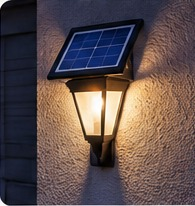

Solar lighting uses energy from sunlight to power lamps. A solar panel collects sunlight and converts it into electrical energy. The energy is stored in a rechargeable battery until the light is needed.
This makes solar lighting a useful option for many outdoor applications.

The solar panel collects sunlight during the day.
The energy is stored in a rechargeable battery.
The battery supplies power to the light when it gets dark.
Dust and dirt can reduce the amount of sunlight reaching the panel. Clean it gently when needed.
Place the panel where it can receive enough direct sunlight during the day.
Follow the manufacturer's guidance for battery care and replacement.